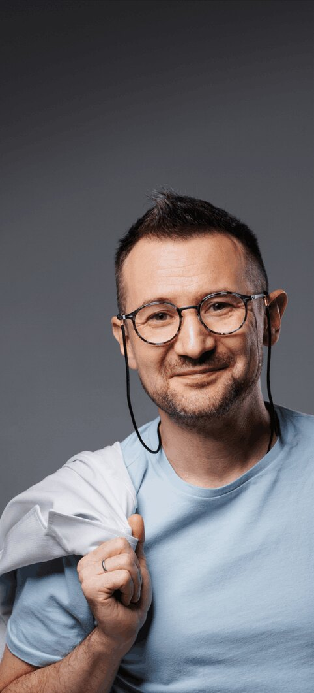
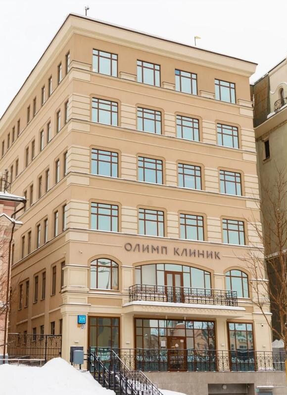
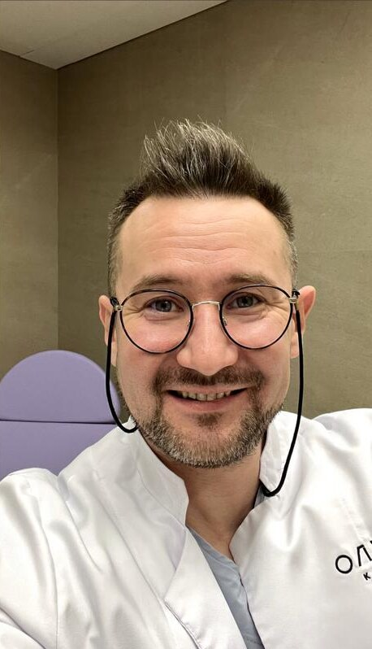

практикующий врач-гинеколог
Дмитрий Лубнин
Доказательно, бережно и понятно
о женском здоровье
- 23+года практики
- >15 тыс.здоровых пациенток
Кандидат медицинских наук, врач УЗИ, автор 5 книг о женском здоровье, популяризатор доказательной медицины.
01принципы работы
Принципы
которых я придерживаюсь в своей работе

-
01
В мой приём включены осмотр на кресле, комплексное УЗИ и pH-метрия влагалища, чтобы уже на первой встрече поставить точный диагноз, назначить лечение (по необходимости) и избежать потребности в повторном визите.
-
02
Я понимаю, что находиться в кресле у гинеколога может быть волнительно, поэтому я очень деликатно провожу осмотр и другие медицинские манипуляции.
-
03
Для меня ваше душевное здоровье является не менее значимым, чем физическое, поэтому на моём приёме вы точно не услышите страшилки или запугивания относительно вашей ситуации.
-
04
Будучи противником бестолкового лечения, я назначаю только нужные анализы и обследования, а также всегда прозрачно объясняю картину вашего здоровья и путь выздоровления, по которому мы идём вместе.
-
05
Мы остаёмся на связи и поддерживаем вас после консультации. Если после очного приёма у вас возникла необходимость что-то уточнить, мы обязательно дадим подробные ответы на ваши вопросы.
02Москва
Очный приём
Я веду очный приём в Москве в клинике «Олимп Клиник»


ст. метро Сухаревская / Цветной бульвар, 5–7 мин. от метро
Главная моя задача
решить все ваши проблемы за один визит!